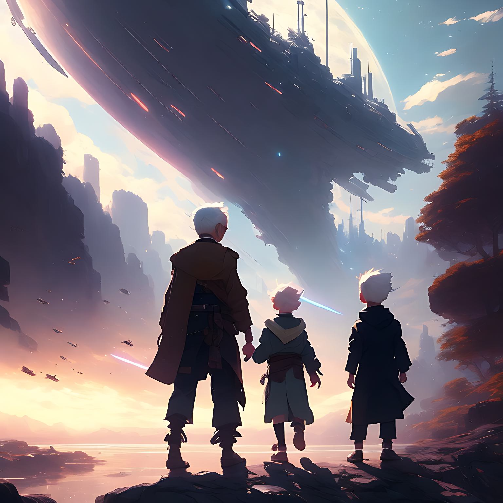

קצת על עצמי
קוראים לי שמשון ואני בן 75 נשוי לכוכבה ואני חיי בכוכב אחר בשנת 2150 של כדור הארץ. אני עובד כחוקר במעבדה ואוהב לחקור ולגלות את היקום.
הדבר הכי חשוב לי בחיים הם הנכדים שלי , אני אוהב להיות בסביבתם ולשמוע אותם משחקים ולשחק איתם ביחד.
אחד האנשים שהשפיעו עלי מאוד בצעירותי הוא אילון מסק , איש שהוא יותר מחלוץ בתחום החלל.
בצעירותי חייתי בכדור הארץ , למדתי ביוטכנולוגיה באוניברסיטת בן גוריון ומשם התפתחתי להיות עוזר מעבדה במחלקה לביולוגיה.
כאשר גילו את הכוכב החדש שאני חיי בו היום חיפשו מתנדבים לנסוע לחקור את הכוכב החדש ,אני ואשתי אהבנו את הרעיון והחלטנו לצאת למסע בכוכב אחר
תמונות שלי



סרקו את הקוד שלי